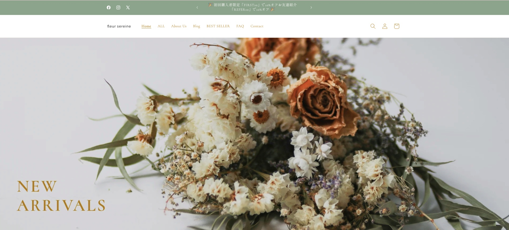

Project Summary
概要
Shopifyスクール卒業課題として制作した、RiseテーマベースのShopifyデモストアです。商品設計から実装レポートまで含め、実務に近い制作フローを意識しました。
Work 03 / Shopifyスクール卒業課題
Riseテーマをベースに、商品設計、コレクション設計、メタフィールド、Journal、FAQ、商品CSV、実装レポートまで含めたShopifyデモストアです。
Project Summary
Shopifyスクール卒業課題として制作した、RiseテーマベースのShopifyデモストアです。商品設計から実装レポートまで含め、実務に近い制作フローを意識しました。
Scope
Shopify Structure
商品、コレクション、メタフィールド、Journal、FAQをつなげ、購入前に必要な情報へ自然に進める構成を目指しました。商品CSVを使って商品情報を整理し、管理画面で更新しやすい状態を意識しています。
Implementation
Documentation
README、CASE_STUDY、実装レポート、設計メモを通して、なぜその構成にしたか、どこを改善したいかを説明できる形にしています。
Challenges & Improvements
今後はLiquidカスタムセクション、商品レコメンド、レビューアプリ表示、Shopify Flowを使った運用自動化、パフォーマンスとアクセシビリティ改善に取り組みたいです。
Screenshots
